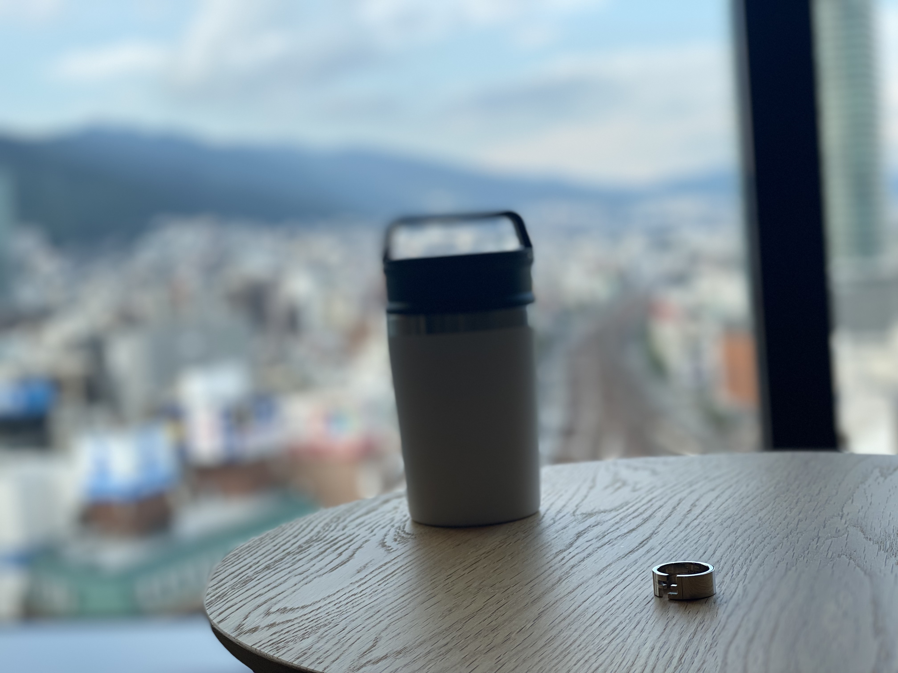
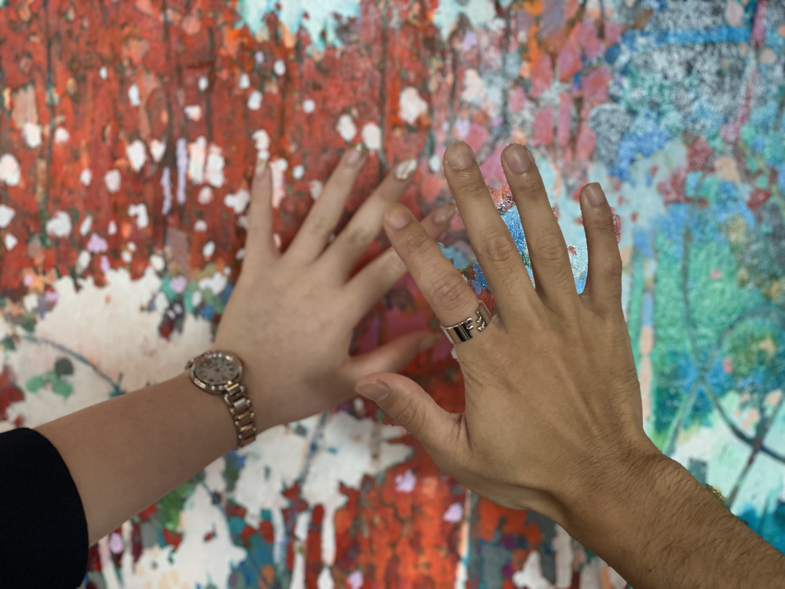
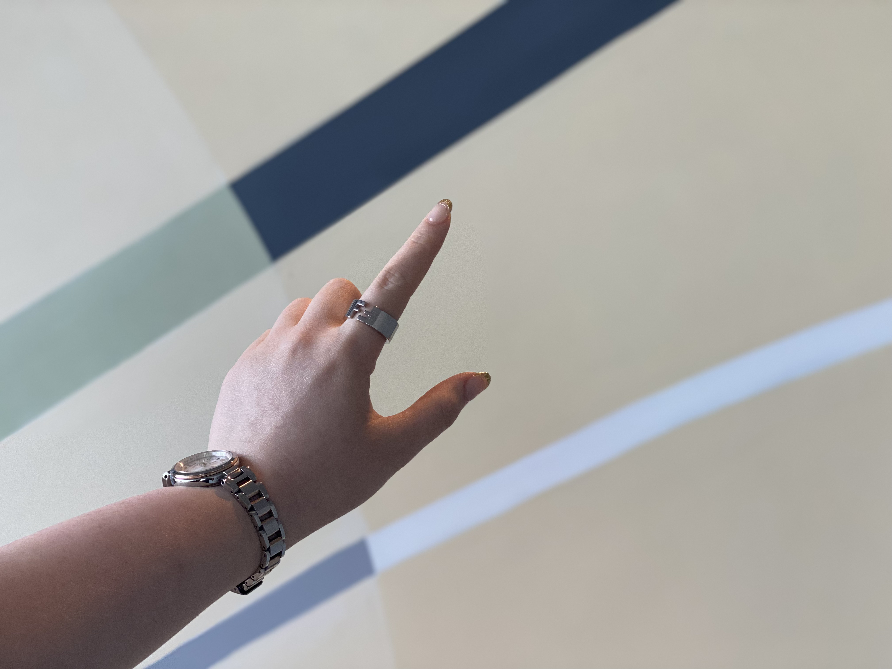

For me
自分磨きのためにメイクをしませんか？
メンズメイクと言っても、女性のような「綺麗さ」「可愛らさ」を求めてメイクするのではありません。
そのため、大きな変化を見せるのではなく、自分の自信に繋がるメイクにして欲しいのです。
自分自身をよりよく見せるために、印象良く見せるためにメイクをしてみましょう。

For partner
友人や恋人のみならず、周りに影響を与える雰囲気を出しませんか？
良く雰囲気、見た目を作ることによって、相手に好印象を持ってもらうことができます。
オンラインでの会議が浸透している中、モニターに映る姿を他の方々よりも良く見せていきましょう。

For lady
女性に対する意識をより強めていきませんか？
自分自身がメイクをすることによって。女性の気持ちを少しでも汲み取ることの第１歩に繋がると思います。
これにより、女性の変化に気づくことができる男性へと成長していくのはいかがでしょうか。